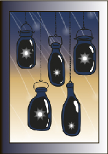

⠀⠀⠀⠀Дорогой дневник!
⠀⠀⠀⠀Сегодня у меня был первый эказмен. Мы сдавали наши проекты, которые делали в течении всего модуля. Экзамен проходил в форме просмотра: комиссия в алфавитном порядке оценивала проект каждого студента. Когда смотрели мой проект, всё, что о нём сказали, было то, что не хватает романтичности. Надеюсь, итоговая оценка будет высокой, ведь я действительно старалась. Мой проект был про магазин звёзд. Наша задача была придумать фирменный стиль наших проектов: нарисовать логотип, подобрать шрифт, создать флаги и графические образы. Суть моего магазина в том, что покупатель может приобрести себе настоящую звезду, сжатую до маленьких размеров и помещенную в контейнер-банку.
⠀⠀⠀⠀Здравствуй, дневник
⠀⠀⠀⠀День сегодня странный. Вчера я так устала, что, приехав домой, сразу уснула и проспала до ночи, и поэтому сегодня ночью я так и не смогла уснуть. Легла я только часов в 7 утра и проснулась в 12. Чувствую себя весь день очень странно, но мне нужно готовиться ко второму экзамену, поэтому я не могу расслабляться!
⠀⠀⠀⠀Привет, дорогой дневник!
⠀⠀⠀⠀Утром мне пришлось проснуться рано и поехать по делам. Кажется даже во время выходных я совсем не высыпаюсь. Но зато я сегодня отлично погуляла. День выдался красивым! (Хотя и очень дождливым...)
⠀⠀⠀⠀Дорогой дневник,
⠀⠀⠀⠀Наконец-то я долго поспала. Уже завтра меня ждёт второй просмотр, и я очень волнуюсь. Боюсь, что работа выполнена недостаточно качественно... Но я правда старалась. Сегодня я буду корректировать все недочеты, которые смогу исправить, и добавлять в свой проект различные украшения. Я всё ещё многого не понимаю, но надеюсь, что оценка будет неплохая. Вечером я думаю отдхонуть, всё-таки работала над проектами всю неделю (да и прошлую тоже). Надо собрать друзей и куда-нибудь вместе сходить... Если не усну!
Варианты: